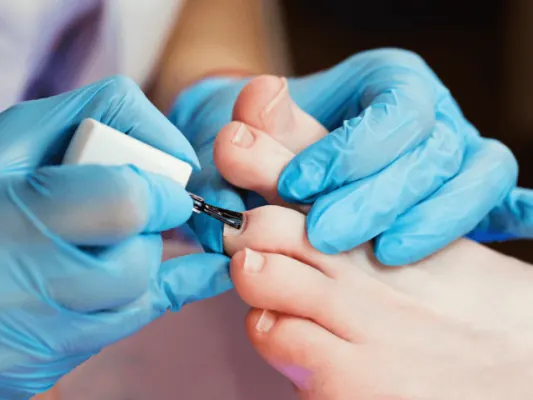

Gids
Sauna en wellness in Nijmegen
Even helemaal niets: in Nijmegen kan dat in de Thermen van Sanadome, met water uit eigen bronnen, of een kwartier verderop in Thermen Berendonck in Wijchen, een saunaresort met hotel. Voor een massage of hammam zijn er kleine spa's in de binnenstad, en in onze bedrijvengids staan alle massagesalons, pedicures en schoonheidssalons van de stad.
In deze gids staan sauna, spa, massage en verzorging bij elkaar, met prijzen, tijden en regels.
Sauna en thermen
Sanadome in Nijmegen-Zuid (badkleding verplicht, vanaf 8 jaar) en Thermen Berendonck in Wijchen (dagentree vanaf € 56, zonder badkleding): wat ze bieden en wat het kost.
Massage en spa
Welke massage past bij jou, en waar vind je een goede salon? Alle massagesalons staan in onze gids massage in Nijmegen.
Hoe ontdek je welke massage het beste werkt voor jou?
Ontspanning, sportmassage of hot stone? Overzicht van de bekendste soorten massage en hoe je kiest wat het beste bij je past.
Massagesalon Nijmegen: Zelfzorg en pure ontspanning!
Even helemaal tot rust komen? De fijnste massagesalons in Nijmegen voor een full body massage en pure ontspanning.
Verzorging
Van een luxe pedicure tot een nieuwe look bij de kapper: de verzorgingsgidsen van NijmegenOnline.

Een verwenmoment voor je voeten: Luxe pedicurebehandelingen in Nijmegen
Toe aan een verwenmoment voor je voeten? Dit zijn de fijnste salons voor een luxe pedicurebehandeling in Nijmegen.
Stap in de wereld van voetverwennerij
Welke pedicurebehandelingen zijn er en wat doen ze? Een overzicht, met plekken in Nijmegen waar je je voeten kunt laten verwennen.
Ontspannen buiten
Ontspanning is ook een wandeling door het bos of een dag aan het water: Heumensoord ligt naast Sanadome, en de Berendonck heeft een strand.

Heumensoord
Wandelen in Heumensoord bij Nijmegen: de routes van 2, 5 en 6 km, parkeren aan de Beukenlaan, de heide met schapen, de beukenlanen en het militaire…
Wandelen in Nijmegen
Wandelen in Nijmegen: stadswandelingen, het rondje over de Waal naar Veur-Lent, Heumensoord, de Mookerheide, de Ooijpolder en de Walk of Wisdom. Met…
Ontspannen op vakantie, zo doe je dat
Echt tot rust komen op vakantie? Tips om stress los te laten en optimaal te genieten van je tijd weg, van voorbereiding tot de eerste dagen.
Andere gidsen: verzorging
Veelgestelde vragen
Welke sauna's zijn er in en bij Nijmegen?
Sanadome in Nijmegen-Zuid en Thermen Berendonck in Wijchen. In de binnenstad zijn kleine spa's voor massage en hammam, zoals Golden Spa en Royal Thai Massage & Spa aan de Bloemerstraat.
Wat kost een dagje sauna bij Nijmegen?
Bij Thermen Berendonck kost een hele dag vanaf € 56, een ochtend vanaf € 42 en een avond vanaf € 45. De actuele entree van Sanadome staat op sanadome.nl.
Kun je in Nijmegen naar de sauna met badkleding?
Ja, bij Sanadome is badkleding zelfs verplicht. Thermen Berendonck is standaard zonder badkleding, met speciale badkledingdagen.